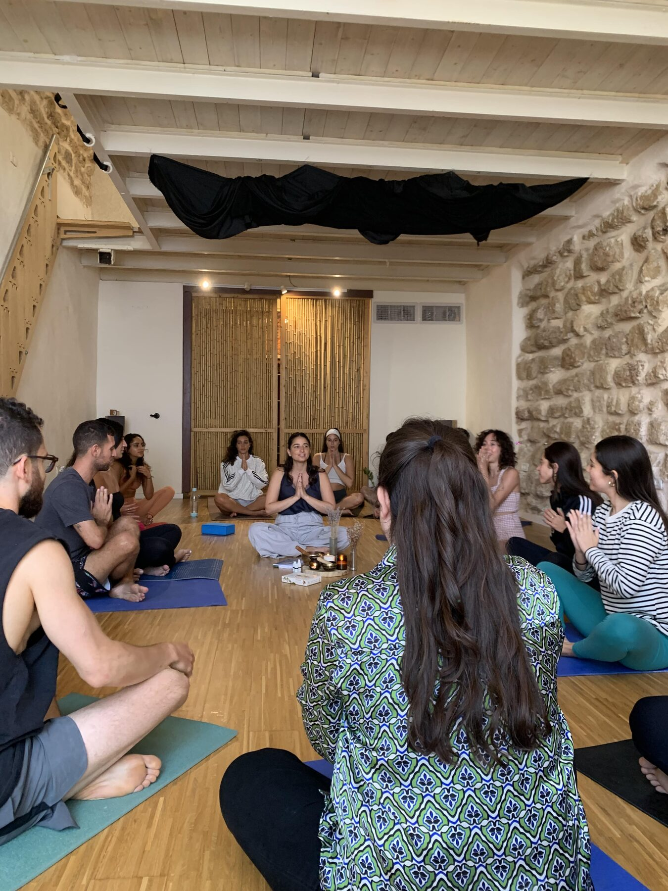
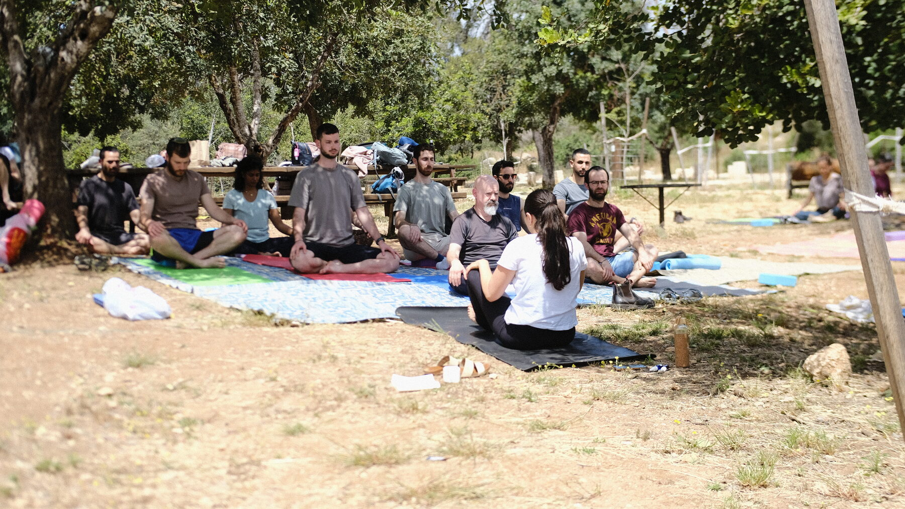
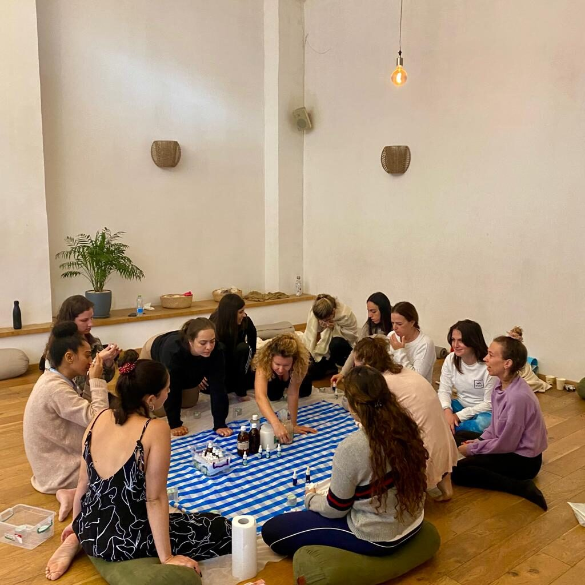
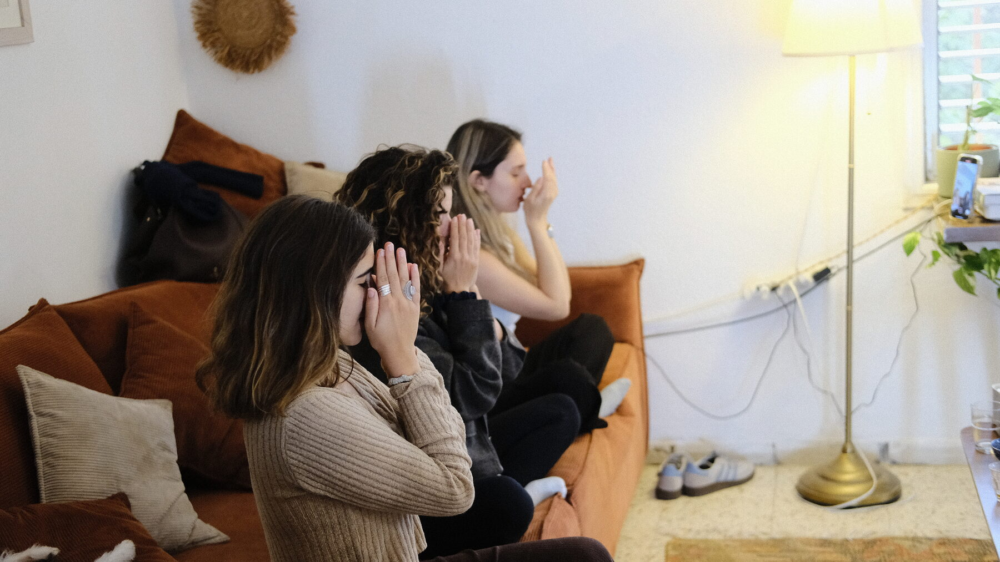
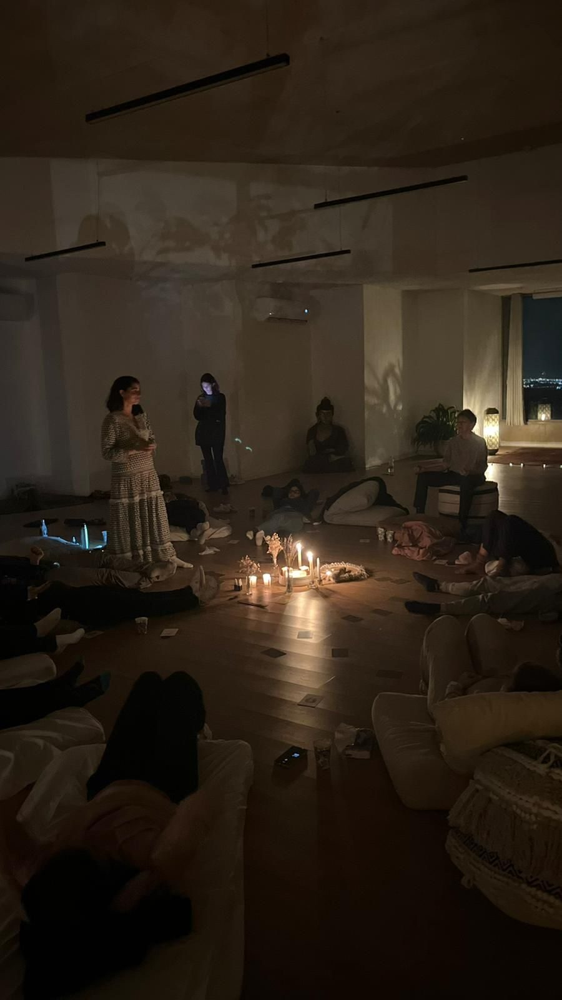

2.2כבר העברתי סדנאות ל־עיריית תל אביבסנטרל פארקבית המייסדיםנילס יארדשאק-איטסטודיו באלאנסהסיסטרספיזיותרפיה, בית החולים הרצוגקבוצת פרויקטים שיקומייםצוותי חינוך
2.3התפריט
סדנאות שאפשר להזמין
ארומתרפיה חווייתית
נריח ונכיר שמנים אתריים איכותיים, נבין את ההבדלים ביניהם ונלמד איך להשתמש בהם בבית בצורה בטוחה ויעילה. זה הבסיס של כל סדנה.
רוקחות טבעית
ההמשך של הארומתרפיה: נכיר את ״בית המרקחת של הטבע״ ונרקח יחד מוצרים מפנקים — וכל משתתפת לוקחת הביתה את מה שרקחה. אפשר גם ארומתרפיה בלבד, בלי החלק הזה.
יוגה ומיינדפולנס
שיעור יוגה לכל הרמות, עם תרגול עדין של הקשבה לגוף ולנשימה — בסטודיו, במשרד או בחוץ, מתחת לעצים.
ריטריט
שתי סדנאות מחוברות למפגש אחד ארוך יותר, בין שעתיים וחצי לארבע שעות — למשל יוגה ואחריה ארומתרפיה. קבוצה שרוצה לשלב אוכל מביאה בעצמה, ואז אפשר להאריך.
2.4למי זה מתאים
כל קבוצה שרוצה רגע אחר
קבוצות פרטיות
חברות, משפחה, ריטריט, מסיבת רווקות, בת מצווה. אצלי בעמק האלה או אצלכן.
עסקים ומקומות בקהילה
סטודיו, חנות, בית אבות, צוות קטן של מקום מקומי.
ארגונים וחברות
עיריות, מוסדות, צוותי חינוך וחברות. מגיעה עם הציוד לכל מקום בארץ.
קבוצות מארבע ועד שלושים משתתפות. מעל שלושים — נדבר ונתאים.
2.5איך זה עובד
שלושה צעדים פשוטים
משאירות פרטים
בטופס למטה: כמה אתן, איפה, ומה בא לכן. ככה אני מגיעה לשיחה כבר מוכנה.
שיחה קצרה
אני חוזרת אליכן בטלפון, ובונות יחד את הסדנה — התוכן, המשך והמוצרים.
מגיעה עם הכל
אני מביאה את כל הציוד והחומרים. אתן רק מגיעות ונהנות.
2.6מהשטח
ככה זה נראה





2.7משתתפות מספרות
מה אומרות אחרי
״היה מאוד מהנה ומלמד! כבר פרסמתי לחברות והן עפו על זה. ממליצה בחום.״
משתתפת בסדנה
״חייבת לעדכן אותך שהשתמשתי בלילות האחרונים בשמן שקיבלנו במתנה בסדנה שלך וההשפעה שלו ממש ניכרת. אני כבר תקופה ארוכה סובלת מחריקות שיניים בלילה ובימים האחרונים זה נעלם.״
נעמה · אחרי סדנה
״בטוחה שעוד נקנה ממך מוצרים.״
משתתפת בסדנה
2.8שאלות ותשובות
מה כדאי לדעת
מה עושים בסדנה?
תלוי בסדנה שבחרתן. בארומתרפיה — מריחות ומכירות שמנים ולומדות להשתמש בהם בבית. ברוקחות — גם רוקחות יחד מוצרים שלוקחות הביתה. ביוגה — מתרגלות יחד, בקצב שמתאים לקבוצה. בריטריט יום — יוגה בבוקר וארומתרפיה אחר כך.
צריך ידע מוקדם?
אין צורך בידע מוקדם — רק סקרנות וחשק ליצור.
כמה משתתפות?
מארבע ועד שלושים. אם אתן יותר — נדבר ונתאים.
אפשר להזמין סדנה לצוות או לארגון?
בשמחה. העברתי סדנאות לעיריית תל אביב, לצוותי חינוך, לבתי אבות ולחברות. משאירות פרטים בטופס, ואני חוזרת אליכן עם הצעה שמתאימה לצוות.
איפה זה קורה?
סדנאות אני מעבירה במקום שאנחנו קובעות מראש — אצלי או אצלכן.
2.9סדנאות פתוחות
מגיעות גם לבד
מעת לעת נפתחות סדנאות במועדים קבועים, שאליהן אפשר להצטרף גם ללא קבוצה. לבירור המועדים הקרובים, אשמח לקבל הודעה.